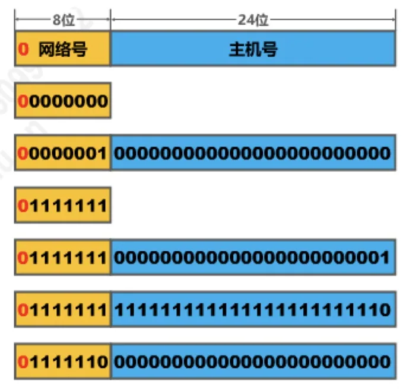
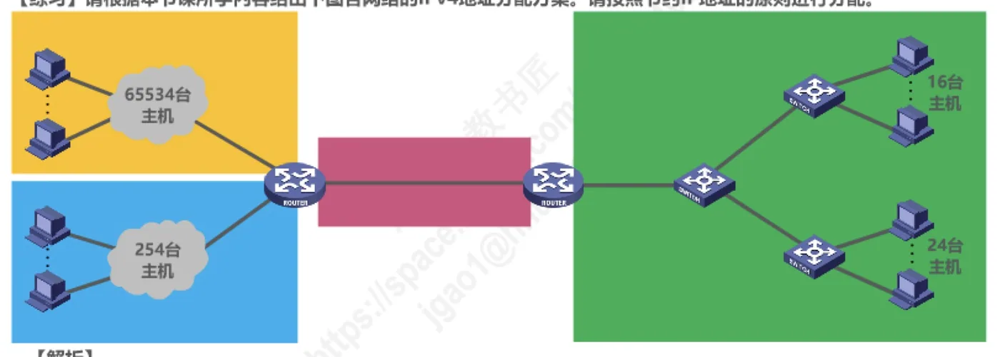

计算机通信与网络 · 第 4 章 网络层
4.3.2 分类编址的IPv4地址
IPv4 最早的编址方法是分类编址：把 32 位地址按最高几位划成 A、B、C、D、E 五类，各给不同长度的网络号。这一节要弄清三件事——五类地址的位结构、A/B/C 三类各自能指派多少网络号和多少主机地址、以及哪些地址是特殊的、不能随便指派。分类编址虽然已被无分类编址取代，但它是后面理解子网掩码、地址块和特殊地址的起点。
1. 分类编址把地址分成五类
分类编址的做法是：把 32 位 IPv4 地址划分为网络号和主机号两部分，并根据地址最高几位（称为类别位）的取值把地址分成五类。类别位不同，网络号和主机号各占多少位也就不同。
| 类别 | 类别位 | 网络号 | 主机号 | 用途 |
|---|---|---|---|---|
| A 类 | 0 | 8 位（去掉 1 位类别位，可用 7 位） | 24 位 | 可分配给网络中的主机或路由器各接口 |
| B 类 | 10 | 16 位（去掉 2 位类别位，可用 14 位） | 16 位 | 同上 |
| C 类 | 110 | 24 位（去掉 3 位类别位，可用 21 位） | 8 位 | 同上 |
| D 类 | 1110 | —— | —— | 多播（组播）地址 |
| E 类 | 1111 | —— | —— | 保留为今后使用 |
用类别位来划分的好处是：拿到一个地址，看一眼最左边的十进制数就能判断它属于哪一类，网络号和主机号的分界也随之确定。但使用时有两条必须记牢的注意事项：
- 只有 A 类、B 类和 C 类地址可以分配给网络中主机或路由器的各接口；
- 主机号为「全 0」的地址是网络地址，主机号为「全 1」的地址是广播地址，这两种地址都不能分配给主机或路由器接口。

2. A、B、C 类地址的可指派范围
每一类地址的网络号都有「最小」和「最大」两个边界，边界上的网络号往往有特殊用途，因此可指派的网络数量并不等于网络号字段能表示的全部组合。下面逐类来看。
（1）A 类地址
- 最小网络号 0，保留不指派；第一个可指派的网络号为 1，网络地址为 1.0.0.0；
- 最大网络号 127，作为本地环回测试地址，不指派。最小的本地环回测试地址为 127.0.0.1，最大的本地环回测试地址为 127.255.255.254；
- 最后一个可指派的网络号为 126，网络地址为 126.0.0.0；
- 可指派的网络数量为 27 − 2 = 126（减 2 的原因是除去最小网络号 0 和最大网络号 127）；
- 每个网络中可分配的 IP 地址数量为 224 − 2 = 16777214（减 2 的原因是除去主机号为全 0 的网络地址和全 1 的广播地址）。
（2）B 类地址
- 最小网络号也是第一个可指派的网络号 128.0，网络地址为 128.0.0.0；
- 最大网络号也是最后一个可指派的网络号 191.255，网络地址为 191.255.0.0；
- 可指派的网络数量为 214 = 16384；
- 每个网络中可分配的 IP 地址数量为 216 − 2 = 65534（减 2 的原因同样是除去全 0 的网络地址和全 1 的广播地址）。
这里有一个容易被教材差异绊住的地方，原讲义专门作了说明：有些教材指出 128.0 是保留网络号，B 类第一个可指派的网络号应为 128.1；但根据 2002 年 9 月发表的 RFC 3330 文档，128.0 这个网络号已经可以分配了。
（3）C 类地址
- 最小网络号也是第一个可指派的网络号 192.0.0，网络地址为 192.0.0.0；
- 最大网络号也是最后一个可指派的网络号 223.255.255，网络地址为 223.255.255.0；
- 可指派的网络数量为 221 = 2097152；
- 每个网络中可分配的 IP 地址数量为 28 − 2 = 254。
与 B 类类似，也有教材认为 192.0.0 是保留网络号、C 类第一个可指派网络号是 192.0.1；原讲义指出，按 RFC 3330 的规定 192.0.0 已经可以分配，只不过目前还没有分配出去。可见 C 类网络的规模很小——一个网络最多只容纳 254 台主机，这正是「C 类地址数量多但每个都太小」的由来，也是后来要划分子网、改用无分类编址的现实动因。
3. D 类和 E 类地址
五类地址中还剩下两类，它们不再区分网络号和主机号，也不用于普通的主机寻址：
- D 类地址（类别位 1110）：第一个地址为 224.0.0.0，最后一个地址为 239.255.255.255，共 228 个地址，用作多播地址，即一对多的组通信；
- E 类地址（类别位 1111）：第一个地址为 240.0.0.0，最后一个地址为 255.255.255.255，共 228 个地址，保留为今后使用。
D 类和 E 类各占整个地址空间的 1/16，都不能分配给主机或路由器接口。
4. 分类编址信息汇总
把五类地址的边界与容量集中列在下面两张表里，便于对照记忆。先看 A、B、C 三类可指派的网络号范围与网络数量（D 类和 E 类不划分网络号，见第二张表）：
| 类别 | 可指派网络号范围 | 可指派网络数 |
|---|---|---|
| A | 1 ～ 126（0 和 127 不指派） | 126（27 − 2） |
| B | 128.0 ～ 191.255 | 16384（214） |
| C | 192.0.0 ～ 223.255.255 | 2097152（221） |
再看各类地址的容量与占整个地址空间的比例。注意 A 类占 1/2，B 类占 1/4，C 类占 1/8，D 类和 E 类各占 1/16，加起来正好是整个 IPv4 地址空间。
| 类别 | 单网主机数 | 占比 |
|---|---|---|
| A | 16777214（224 − 2） | 1/2 |
| B | 65534（216 − 2） | 1/4 |
| C | 254（28 − 2） | 1/8 |
| D | ——（多播地址，共 228 个） | 1/16 |
| E | ——（保留为今后使用，共 228 个） | 1/16 |
5. 几类特殊的 IPv4 地址
除了上面按类划分的常规地址，还有几种网络号或主机号取特殊值的地址，它们在协议运行中承担着固定的含义，不能当作普通的单播地址来用。
| 网络号 | 主机号 | 源地址 | 目的地址 | 含义 |
|---|---|---|---|---|
| 0 | 0 | 可以 | 不可 | 在本网络上的本主机（DHCP 协议使用） |
| 0 | host-id | 可以 | 不可 | 在本网络上的某台主机 host-id |
| 全 1 | 全 1 | 不可 | 可以 | 只在本网络上进行广播（各路由器均不转发） |
| net-id | 全 1 | 不可 | 可以 | 对 net-id 上的所有主机进行广播 |
| 127 | 非全 0 或全 1 | 可以 | 可以 | 用于本地软件环回测试 |
把这几种地址放在一起比较，可以更清楚地看出「源地址」和「目的地址」的限制从何而来。原讲义用一道 2017 年的真题来检验这个判断：下列 IP 地址中，只能作为 IP 分组的源 IP 地址但不能作为目的 IP 地址的是——A. 0.0.0.0，B. 127.0.0.1，C. 20.10.10.3，D. 255.255.255.255。答案是 A。理由分别是：
- 地址 0.0.0.0 是一个特殊 IPv4 地址，只能作为源地址使用，表示「在本网络上本主机」；封装有 DHCP Discovery 报文的 IP 分组的源地址就使用 0.0.0.0；
- 以 127 开头且后面三个字节非「全 0」或「全 1」的地址是一类特殊的 IPv4 地址，既可以作为源地址使用，也可以作为目的地址使用，用于本地软件环回测试，例如常用的 127.0.0.1；
- 地址 255.255.255.255 也是特殊的 IPv4 地址，只能作为目的地址使用，表示「只在本网络上进行广播（各路由器均不转发）」。
6. 怎样判断一个分类地址能否指派给主机
综合上面的规则，拿到一个分类编址的 IPv4 地址，可以按三步判断它能不能指派给主机或路由器接口：
- 第一步，看地址左起第一个十进制数的值判断类别：小于 127 的是 A 类，128～191 的是 B 类，192～223 的是 C 类；
- 第二步，按类别划分网络号和主机号：A 类地址的网络号是左起第一个字节，B 类地址的网络号是左起前两个字节，C 类地址的网络号是左起前三个字节；
- 第三步，排除三种不能指派的情况：A 类网络号 0 和 127；主机号为「全 0」（这是网络地址）；主机号为「全 1」（这是广播地址）。
按这三条规则判断，几个典型地址的结论是：0.1.2.3 是 A 类，因网络号 0 保留而不能指派；126.255.255.255 是 A 类，主机号全 1 是广播地址，不能指派；127.0.0.1 是 A 类，是本地环回测试地址，不能指派；128.0.255.255 和 172.18.255.255 都是 B 类，主机号全 1 是广播地址，不能指派；192.0.0.255 是 C 类，主机号全 1 是广播地址，不能指派；而 1.2.3.4、166.16.18.255、191.255.255.252、196.2.3.8、218.75.230.30、223.255.255.252 的网络号和主机号都不落入上述三种情况，可以指派给主机。
分类编址还需要考虑「按需分配、节约地址」：如果给出若干个规模不同的网络，应先找出图中有哪些网络，再根据每个网络中主机和路由器接口的总数量决定该分配哪一类的网络号，最后在该类的可指派网络号范围内为每个网络各挑选一个互不相同的网络号。原讲义的例子中，拥有 65534 台主机的网络分配 A 类网络号，拥有 254 台主机的网络分配 B 类网络号，只有 16 台和 24 台主机的两个网络分配 C 类网络号——类别选得刚刚够用，才不会浪费地址。

本节小结
- 分类编址按类别位把 32 位地址分成五类：A 类（0）网络号 8 位、主机号 24 位；B 类（10）16 + 16；C 类（110）24 + 8；D 类（1110）为多播地址；E 类（1111）保留。
- 只有 A、B、C 类地址可指派给主机或路由器接口；主机号全 0 是网络地址、全 1 是广播地址，都不能指派。
- A 类可指派网络号 1～126（网络号 0 保留、127 用作本地环回测试），共 126 个网络、每网 16777214 个地址；B 类 128.0～191.255，共 16384 个网络、每网 65534 个地址；C 类 192.0.0～223.255.255，共 2097152 个网络、每网 254 个地址。
- 各类占地址空间的比例依次是 A 类 1/2、B 类 1/4、C 类 1/8、D 类和 E 类各 1/16。
- 0.0.0.0 只能作源地址（DHCP 场景，表示本网络上的本主机），255.255.255.255 只能作目的地址（只在本网络广播），net-id 加全 1 主机号是对该网络的广播地址，127 开头的地址用于本地软件环回测试。
- 判断某地址能否指派：先由第一个字节定类别，再按类别分出网络号和主机号，最后排除 A 类网络号 0 与 127、主机号全 0、主机号全 1 这三种情况。